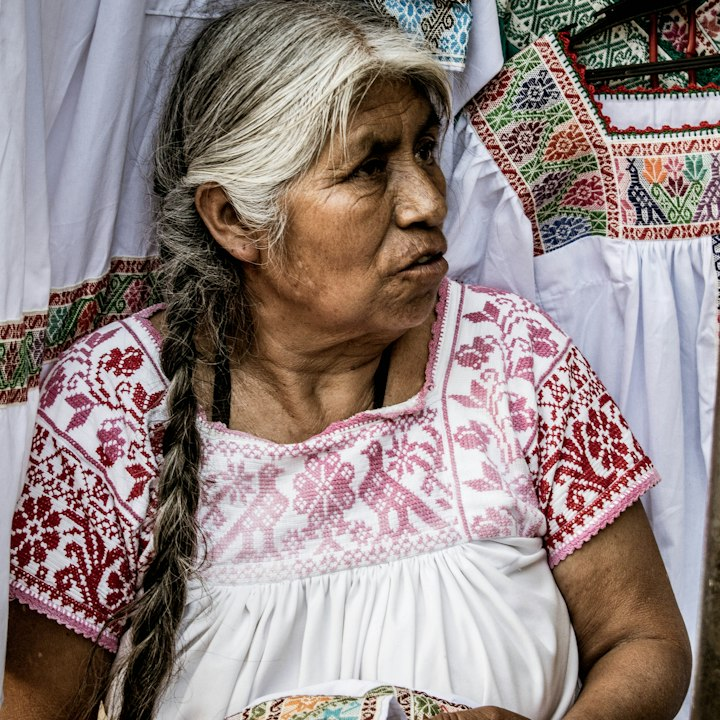
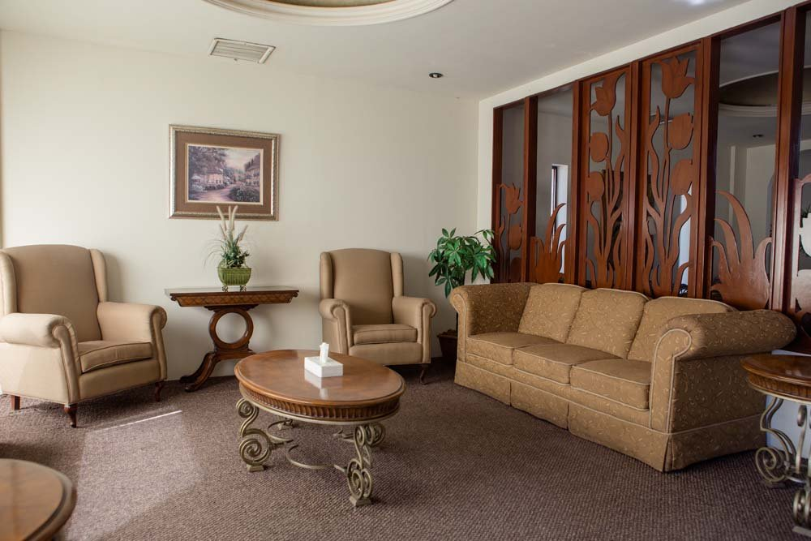

Martha
My parents had been saying “we’ll sort it out later” for years. We went to Serna, they explained everything patiently and we set it up in monthly payments. My mom left calmer than any of us.

We are here 24 hours a day, 365 days a yearHere for you 24/7


 A La Laguna family caring for La Laguna families.
A La Laguna family caring for La Laguna families.
Four generations of the Serna family serving La Laguna. We can help you today, or help you plan ahead so your family never has to decide in a rush.
4.8/5 Average on Google Maps
Google Facebook
My parents had been saying “we’ll sort it out later” for years. We went to Serna, they explained everything patiently and we set it up in monthly payments. My mom left calmer than any of us.
My grandfather passed in the middle of the night and we didn’t even know who to call. They answered on the second ring and were with us in under an hour. Thank you, truly.

From the moment we arrived we felt looked after. The room was spotless, coffee always ready and no one rushed us. They cared for my grandmother as if she were theirs.

I’m 74 and didn’t want my kids to struggle. I chose everything myself, I’m paying over 18 months and the price won’t go up. That’s how it should be.

They sent us the information on WhatsApp and let us decide calmly. Not a single pushy call. In the end we signed up for a plan for both of us.

My dad passed away out of state and I had no idea about the paperwork. They handled the whole transfer and kept me updated at every step. Forever grateful.

We bought a niche for my mother’s ashes. It’s a very peaceful, clean space. We go every Sunday after mass.

The guided ceremony was something we didn’t expect. My children and I could finally tell my wife everything we’d been holding in. Deeply human.

My grandfather, my father and now my mother. Always the same respect and warmth. In my family no one even considers another funeral home.


Since 1935 the Serna family has run the business personally. Today the fourth generation keeps our grandfather’s values: empathy, warmth and personal care.
Read our storyWe tell you what each service includes, and what it doesn’t, before you decide. No fine print, no surprise charges.
Guided farewell ceremonies with grief specialists, video tributes and memorial walls, so no one grieves alone.
With a Serna pre-need plan the price agreed today is the final price, paid over up to 36 months with no bank interest.

It all starts with a call to 871 717 8585. A real person from our team answers and tells you exactly what to do.
Burial, cremation, a viewing room or chapel: we explain every option clearly so you choose what your family wants.
Documents, permits and local, national or international transfers. No lines and no phone calls for you.
Viewing room, café, hearse and uniformed staff. Every detail cared for, so you can focus on saying goodbye.
Guided farewell ceremonies, video tributes and memorial walls to honour their memory.
Casket, viewing room, hearse, chapel and paperwork included.
Learn moreWith the city’s first crematorium and the same care as always.
Learn moreToday’s price locked in, up to 36 months interest-free.
Learn moreA dignified place close by to visit the one you love.
Learn moreNational and international, with all formalities handled.
Learn moreFor companies, unions and government institutions.
Learn moreEvery week, families from Torreón and Gómez Palacio trust us with the people they love most. Here are some of their stories.
“My parents had been saying “we’ll sort it out later” for years. We went to Serna, they explained everything patiently and we set it up in monthly payments. My mom left calmer than any of us.”
Martha G.
Pre-planning · 2 days ago
My parents had been saying “we’ll sort it out later” for years. We went to Serna, they explained everything patiently and we set it up in monthly payments. My mom left calmer than any of us.
“My grandfather passed in the middle of the night and we didn’t even know who to call. They answered on the second ring and were with us in under an hour. Thank you, truly.”
Ricardo L.
Immediate need · 1 week ago
My grandfather passed in the middle of the night and we didn’t even know who to call. They answered on the second ring and were with us in under an hour. Thank you, truly.
“From the moment we arrived we felt looked after. The room was spotless, coffee always ready and no one rushed us. They cared for my grandmother as if she were theirs.”
Daniela y Raúl R.
Cremation · 3 weeks ago
From the moment we arrived we felt looked after. The room was spotless, coffee always ready and no one rushed us. They cared for my grandmother as if she were theirs.
“I’m 74 and didn’t want my kids to struggle. I chose everything myself, I’m paying over 18 months and the price won’t go up. That’s how it should be.”
Don Arturo M.
Pre-planning · 1 month ago
I’m 74 and didn’t want my kids to struggle. I chose everything myself, I’m paying over 18 months and the price won’t go up. That’s how it should be.
“They sent us the information on WhatsApp and let us decide calmly. Not a single pushy call. In the end we signed up for a plan for both of us.”
Familia Hernández
Pre-planning · 1 month ago
They sent us the information on WhatsApp and let us decide calmly. Not a single pushy call. In the end we signed up for a plan for both of us.
“My dad passed away out of state and I had no idea about the paperwork. They handled the whole transfer and kept me updated at every step. Forever grateful.”
Luis F.
Transfer · 2 months ago
My dad passed away out of state and I had no idea about the paperwork. They handled the whole transfer and kept me updated at every step. Forever grateful.
“We bought a niche for my mother’s ashes. It’s a very peaceful, clean space. We go every Sunday after mass.”
Rosa Elena V.
Niches · 2 months ago
We bought a niche for my mother’s ashes. It’s a very peaceful, clean space. We go every Sunday after mass.
“The guided ceremony was something we didn’t expect. My children and I could finally tell my wife everything we’d been holding in. Deeply human.”
Don Ernesto S.
Guided farewell · 3 months ago
The guided ceremony was something we didn’t expect. My children and I could finally tell my wife everything we’d been holding in. Deeply human.
“My grandfather, my father and now my mother. Always the same respect and warmth. In my family no one even considers another funeral home.”
Jorge A.
Immediate need · 3 months ago
My grandfather, my father and now my mother. Always the same respect and warmth. In my family no one even considers another funeral home.
4.8/5 average rating from families on Google Maps
Three locations with our own facilities in Torreón and Gómez Palacio, and one family behind every service.
Av. Juárez 2133 Ote., Col. Centro
Torreón, Coah.
Av. Matamoros 100 Pte., Centro
Torreón, Coah.
Av. Hidalgo 573, Centro
Gómez Palacio, Dgo.

Inside our facilities,
cared for every day
Gilberto Serna López founded the company in 1935, making his own caskets alongside his wife and nine children. Today the fourth generation leads it with the same values.


We know this is a hard subject. Here are the questions we hear most.
Call us on 871 717 8585 at any hour. We’ll tell you what to do step by step, bring your loved one into our care and handle the paperwork.
It means arranging the funeral you want today, so your family doesn’t have to decide or pay at the moment of loss. The price agreed today is the final price, and you can pay over up to 36 months with no bank interest.
Because without a plan, decisions are usually made in a rush, in grief and at higher cost. Planning today gives you certainty and protects your family from extra costs.
Casket, viewing room, café, hearse, uniformed staff, cosmetic care, funeral management, local transfers, chapel for religious services and all documents. Cemetery and obituary notice are not included.
Casket rental, cremation, documents, local transfers, uniformed staff, viewing room, cosmetic care, chapel, funeral management and café.
Yes. We handle national and international transfers and help you with the documents each state requires.
Yes. We work with private companies, unions and government institutions. Leave your details and an advisor will contact you.

Answer 5 quick questions and an advisor from the Serna family will reach you on WhatsApp with options for you.